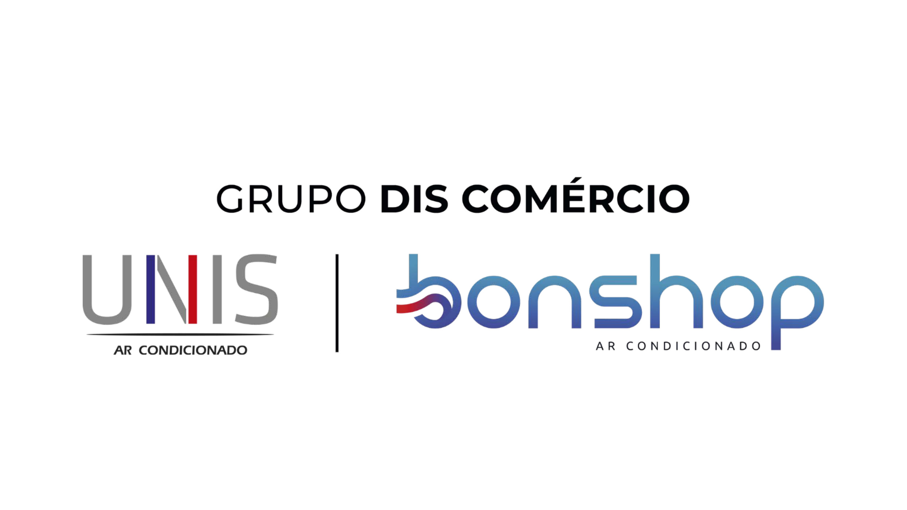

UNIS & Bonshop | Teste seus conhecimentos
Este quiz tem 22 perguntas sobre o Manual Operacional do Vendedor do Grupo DIS – UNIS & Bonshop.
Objetivo: garantir que todo mundo está alinhado no mesmo padrão de trabalho.
Responda sem consultar o material. Depois você pode revisar o manual com base no que errou.
Lembre: Vendedor DIS não espera a venda, cria a venda.